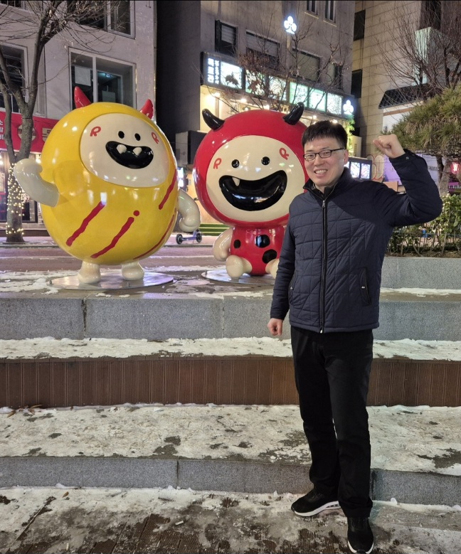

Chào mừng bạn đến với Mapo Tour! Tôi là Nguyễn Văn Toàn – người đã sinh sống 15 năm tại quận Mapo, một khu vực năng động và giàu văn hóa ở Seoul, Hàn Quốc.
Tôi cung cấp dịch vụ hướng dẫn du lịch miễn phí với mong muốn giúp du khách khám phá những góc phố, món ăn đặc trưng và trải nghiệm văn hóa độc đáo của khu vực Mapo. Từ những con đường sôi động đến những quán ăn địa phương, bạn sẽ được đắm mình vào cuộc sống bản địa một cách chân thực nhất.
Tên hướng dẫn viên: Nguyễn Văn Toàn
Zalo ID: @mapotour
Nếu bạn có bất kỳ câu hỏi hay yêu cầu đặc biệt nào, vui lòng nhắn tin qua Zalo để nhận được phản hồi nhanh nhất.